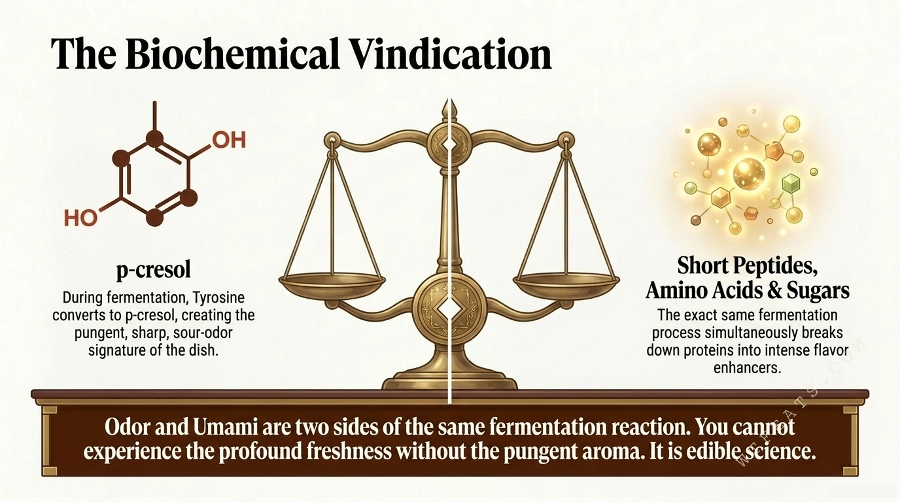
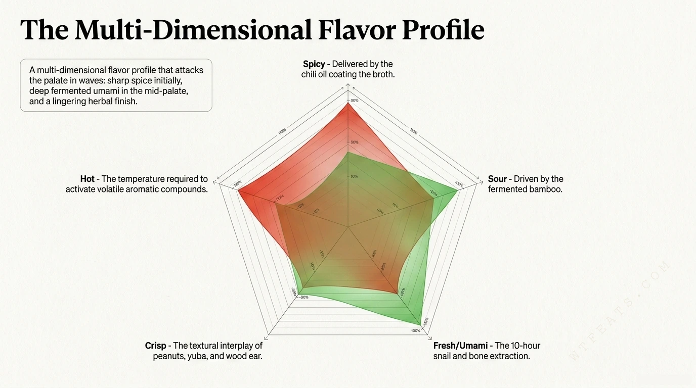

Every bowl of luosifen is two experiments running in parallel. One is a slow fermentation that builds the famous aroma. The other is a long extraction that builds the broth. Understanding both turns "why would anyone eat this" into "oh, that's actually elegant."
1. Fermented bamboo: the smell is the flavor
Fresh bamboo shoots are rich in tyrosine, an amino acid. Submerged in pure spring water or rice water for 14 to 30 days, microbes convert that tyrosine into p-cresol — the pungent, sharp, sour-odor signature of the dish. This is not spoilage; it is controlled fermentation, monitored daily by specialists who judge exactly when the shoots hit pungent, crisp perfection.
Here is the part that vindicates the whole dish: the exact same fermentation that creates p-cresol also breaks down proteins into massive amounts of short peptides, amino acids, and sugars — intense flavor enhancers.

2. The snail broth: a 10-hour umami engine
Fresh river snails are simmered with pork and chicken bones, star anise, cinnamon, and regional herbs for over ten hours. Long, gentle heat extracts glutamates from the bones and meat while the snails contribute their own savory nucleotides. Together these compounds amplify each other, producing a broth far deeper than any single ingredient could manage.
Once extraction is complete, the snail meat is discarded — its culinary purpose entirely fulfilled. The broth is fresh; the famous aroma never came from it.
Odor and umami are two sides of the same fermentation reaction. You cannot experience the profound freshness without the pungent aroma. It is edible science.
3. Chili oil and the five-dimensional balance
The final layer is calibration. Chili oil delivers the immediate fiery shock and coats the broth, carrying fat-soluble aromas across the palate. The fermented sourness cuts through that fat. The snail broth anchors the mid-palate with lingering umami. Crisp bamboo, wood ear, peanuts, and yuba keep the texture moving, and serving temperature — properly scalding — volatilizes the aromatic compounds so they hit the nose before the first bite.
Spicy, sour, umami, crisp, hot: 辣, 酸, 鲜, 爽, 烫. Remove any one dimension and the bowl collapses into an ordinary noodle soup.

How to try it without panicking
Start with a premium packaged version — modern packaging technology has produced instant luosifen so consistent that top Chinese food critics rate it equal to fresh street stalls. Stir the chili oil fully into the broth before the first bite, eat it hot, and do not pick out the bamboo shoots. Without them it is just noodle soup; with them, it is luosifen.
- Born: late 1970s, night markets of Liuzhou, Guangxi.
- Protected: National Geographical Indication status, 2018.
- Honored: National Intangible Cultural Heritage list, 2021.
- Signature molecule: p-cresol, from fermented bamboo — not from snails.